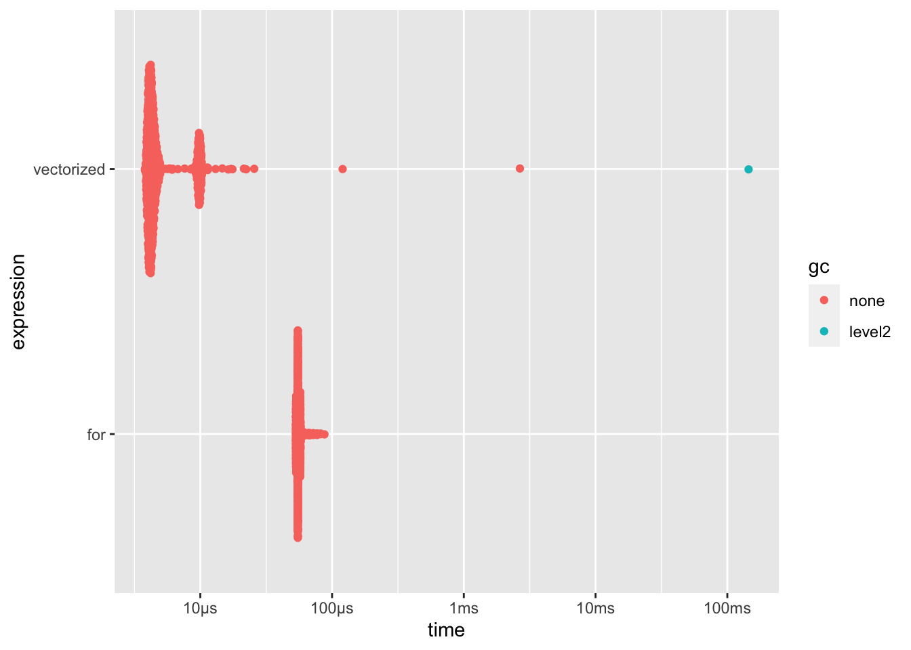

Chapter 15 The Need for Optimization
The most powerful optimization technique in any programmer’s toolbox is to do nothing.
15.1 Build first, then optimize
15.1.1 Identifying bottlenecks
As Donald Knuth puts it “Premature optimization is the root of all evil”. What does that means? That focusing on optimizing small portions of your app before making it work fully is the best way to lose time along the way, even more in the context of a production application, where there are deadlines and a limited amount of time to build the application.
Why? Here is the general idea: in the following schema below, you can make the circles travel to the bottleneck as fast as you want, the circles will still be slowed by the narrow bottleneck, hence you will just be losing time making the circle movement faster, without actually gaining any time on the global performance. So focus on making the bottleneck larger, before focusing on making the circle travel fast. When? Once the application is ready: here in our example, we can only detect the bottleneck once the bottle is actually built, not while we are “building the circle”.

{kind=link}
This is the very thing you should be optimizing: having faster code anywhere else except this bottleneck will not make your app faster: you will just make your app reach the bottleneck faster, but there will still be this part of your app that slows everything down. But this is something you might only realize when the app is fully built: pieces might be fast together, but slow when put together. It is also possible that the test dataset you have been using from the start works just fine, but when you try your app with a bigger, more realistic dataset, the application is actually way slower than it should be. And, maybe you have been using an example dataset so that you do not have to query the database every time you implement a new feature, but actually the SQL query to the database is very slow. This is something you will discover only when the application is fully functional, not when building the parts: and realizing that when you only have 5% of the allocated time for this project left on your calendar is not a good surprise.
15.1.2 Do you need faster functions?
Optimizing an app is a matter of trade-offs: of course, in a perfect world, every piece of the app would be tailored to be fast, easy to maintain, and elegant. But in the real world, you have deadlines, limited times and resources, and we are all but humans. That means that at the end of the day, your app will not be completely perfect: a software can always be made better. No piece of code has ever reached complete perfection.
Given that, do you want to spend 5 days out of the 30 you have planned optimizing a function so that it runs in a quarter of a second instead of half a second, then realize the critical bottleneck of your app is actually the SQL query and not the data manipulation? Of course a function running two times faster is a good thing, but think about it in context: for example, how many times is this function called ? We can safely bet that if your function is only called once, working on making it twice faster might not be the one function you would want to focus on (well, unless you have unlimited time to work on your project, and in that case lucky you, you can spend a massive amount of time building the perfect software). On the other hand, the function which is called thousands of time in your application might benefit from being optimized.
And all of this is basic maths. Let’s assume the following:
- A current scenario takes 300 seconds to be accomplished on your application
- One function
A()takes 30 seconds, and it’s called once - One function
B()takes 1 second, and it’s called 50 times
If you divide the execution time of A() by two, you would be performing a local optimization of 15 seconds, and a global optimization of 15 seconds.
On the other hand, if you divide the execution time of B() by two, you would be performing a local optimization of 0.5 seconds, but a global optimization of 25 seconds.
Again, this kind of optimization is hard to detect until the app is functional. An optimization of 15 seconds is way greater that an optimization of 0.5 seconds. Yet you will only realize that once the application is up and running!
15.1.3 Don’t sacrifice readability
As said in the last section, every piece of code can be rewritten to be faster, either from R to R or using a lower level language: for example C or C++. You can also rebuild data manipulation code use one package to another, use complex data structures to optimizing memory usage, etc, etc. But that comes with a price: not keeping thing simple for the sake of local optimization makes maintenance harder, even more if you are using a lesser known language/package. For example, switching some portions of your code to C++ implies that you might be the only person being able to maintain that specific portion of code, or that your colleague taking over the project will have to spend hours learning the tools you have been building, or the language you have chosen to write your functions with.
Again, optimization is always a matter of trade-off: is the half-second local optimization worth the extra hours you will have to spend correcting bugs when the app will crash and when you will be the only one able to correct it? Also, are the extra hours/days spent rewriting a working code-base worth the speed gain of 0.5 seconds on one function?
For example, let’s compare both these implementations of the same function, one in R, and one in C++ via {Rcpp} (Eddelbuettel et al. 2020)
Of course, the C++ function is faster than the R one—this is the very reason of using C++ with R.
library("Rcpp")
cppFunction("
double mean_cpp(NumericVector x) {
int j;
int size = x.size();
double res = 0;
for (j = 0; j < size; j++){
res = res + x[j];
}
return res / size;
}")
benched <- bench::mark(
cpp = mean_cpp(1:100000),
native = mean(1:100000),
iterations = 1000
)
benched[90m# A tibble: 2 x 6[39m
expression min median `itr/sec` mem_alloc `gc/sec`
[3m[90m<bch:expr>[39m[23m [3m[90m<bch:>[39m[23m [3m[90m<bch:>[39m[23m [3m[90m<dbl>[39m[23m [3m[90m<bch:byt>[39m[23m [3m[90m<dbl>[39m[23m
[90m1[39m cpp 164µs 459µs [4m2[24m380. 783.8KB 31.3
[90m2[39m native 453µs 460µs [4m2[24m089. 22.7KB 0 (Note: we will come back to bench::mark later)
Though, how much time gain is worth being sure you will get someone in your team to take over the maintenance if needed? In other words, given that (in our example), we are gaining around -1.41110^{-6} on the execution time of our function, is it worth switching to C++? Using external languages or complex data structures implies that from the start, you will need to think about who and how your code base will be maintain over the years. Chances are that if you plan on using a Shiny application during a span of several years, various R developers will be working on the project, and including C++ code inside your application means that these future developer will either be required to know C++, or they will not be able to maintain this piece of code.
So, to sum up, there are three ways to optimize your application & R code, and the bad news is that you can not optimize for all of them:
- Optimizing for speed
- Optimizing for memory
- Optimizing for readability/maintainability
Leading a successful project means that you should, as much as possible, find the perfect balance between these three.
15.2 Tools for profiling
15.2.1 Profiling R code
15.2.1.1 Identifying bottlenecks
The best way to profile R code is by using the {profvis} (???) package,37 a package designed to evaluate how much time each part of a function call take.
With {profvis}, you can spot the bottleneck of your function.
Without an automated tool to do the profiling, the developers would have to profile by guessing, which will, most of the time, come with bad results:
One of the lessons that the original Unix programmers learned early is that intuition is a poor guide to where the bottlenecks are, even for one who knows the code in question intimately.
Instead of guessing, it is safe bet to go for a tool like {profvis}, which allows to have a detailed view of what takes a long time to run in your R code.
Using this package is quite straightforward: put the code you want to benchmark inside the profvis() function,38 wait for the code to run, and… that is it, you now have an analysis of your code running time.
Here is an example with 3 nested functions, top(), middle() and bottom(), where top() calls middle() which calls bottom():
library(profvis)
top <- function(){
# We use profvis::pause() because Sys.sleep() doesn't
# show in the flame graph
pause(0.1)
lapply(1:10, function(x){
x * 10
})
middle()
}
middle <- function(){
pause(0.2)
1e4 * 9
bottom_a()
bottom_b()
}
bottom_a <- function(){
pause(0.5)
print("hey")
}
bottom_b <- function(){
pause(2)
print("hey")
}
profvis({
top()
})What you see now is what is called a flame graph: it is a detailed timing of how your function has run, with a clear decomposition of the call stack.
What you see on top window is the expression evaluated, and on the bottom a detail of the call stack, with what looks like a little bit like a Gantt diagram.
This result reads as such: the wider the function call, the more time it has taken R to computer this piece of code.
On the very bottom, the “top” function (i.e. the function which is directly called in the console), and the more you go up, the more you enter the nested function calls.
Here is how to read this graph:
On the x axis, the time spent computing the function. Our
top()function being the only one executed, it takes the whole record time.Then, the second level is the first level of what is called inside
top(): first, the function pauses, then it does a series of call toFUN(which is the internal anonymous function fromlapply()), then calls themiddle()function, which spans from around 100 ms to the end of the call. Then, a detail ofmiddle(), which callsbottom_a()andbottom_b(), which eachpause()for a given amount of time.

If you click on the “Data” tab, you will also find another view of the flame graph, where you can read the hierarchy of calls and the time and memory spent on each function call:

If you are working on profiling the memory usage, you can also use the {profmem} (???) package which, instead of focusing on execution time, will record the memory usage of calls.
Rprofmem memory profiling of:
{
x <- raw(1000)
A <- matrix(rnorm(100), ncol = 10)
}
Memory allocations:
what bytes calls
1 alloc 256 <internal>
2 alloc 488 <internal>
3 alloc 488 <internal>
4 alloc 1072 <internal>
5 alloc 1048 raw()
6 alloc 272 matrix()
7 alloc 560 matrix()
8 alloc 552 matrix()
9 alloc 1072 matrix()
10 alloc 848 matrix() -> rnorm()
11 alloc 2552 matrix() -> rnorm()
12 alloc 848 matrix()
13 alloc 528 <internal>
14 alloc 1648 <internal>
15 alloc 1648 <internal>
16 alloc 1072 <internal>
17 alloc 256 <internal>
18 alloc 456 <internal>
19 alloc 216 <internal>
20 alloc 256 <internal>
total 16136 You can also get the total allocated memory with:
[1] 16136And extract specific values based on the memory allocation:
Rprofmem memory profiling of:
{
x <- raw(1000)
A <- matrix(rnorm(100), ncol = 10)
}
Memory allocations:
what bytes calls
4 alloc 1072 <internal>
5 alloc 1048 raw()
9 alloc 1072 matrix()
11 alloc 2552 matrix() -> rnorm()
14 alloc 1648 <internal>
15 alloc 1648 <internal>
16 alloc 1072 <internal>
total 10112 (Example extracted from {profmem} help page).
Here it is, now you have a tool to identify bottlenecks!
15.2.1.2 Benchmarking R Code
Identifying bottlenecks is a start, but what to do now? In the next chapter about optimization, we will dive deeper into common strategies for optimizing R & Shiny code. But before that, remember this rule: never start optimizing if you can not benchmark this optimization. Why? Because developers are not perfect at identifying bottlenecks and estimating if something is faster or not, and some optimization methods might lead to slower code. Of course, most of the time they will not, but in some cases adopting optimization methods leads to writing slower code, because we have missed a bottleneck in our new code. And of course, without a clear documentation of what we are doing, we will be missing it, relying only on our intuition as an rough guess of speed gain.
In other words, if you want to be sure that you are actually optimizing, be sure that you have a basis to compare with.
How to do that? One thing that can be done is to keep an RMarkdown file with your starting point: use this notebook to keep track of what you are doing, by noting where you are starting from (i.e, what’s the original function you want to optimize), and compare it with the new one. By using an Rmd, you can document the strategies you have been using to optimize the code, e.g: “switched from for loop to vectorize function”, “changed from x to y”, etc. This will also be helpful for the future: either for you in other projects (you can get back to this document), or for other developers, as it will explain why specific decisions have been made.
To do the timing computation, you can use the {bench} (???) package, which compares the execution time (and other metrics) of two functions.
This function takes a series of named elements, each containing an R expression that will be timed.
Note that by default, the mark() function compares the output of each function,
Once the timing is done, you will get a data.frame with various metrics about the benchmark.
x <- function(size){
res <- numeric(size)
for (i in 1:size){
res[i] <- i * 10
}
return(res)
}
y <- function(size){
(1:size) * 10
}
res <- bench::mark(
`for` = x(1000),
vectorized = y(1000),
iterations = 1000
)
res[90m# A tibble: 2 x 6[39m
expression min median `itr/sec` mem_alloc
[3m[90m<bch:expr>[39m[23m [3m[90m<bch:t>[39m[23m [3m[90m<bch:t>[39m[23m [3m[90m<dbl>[39m[23m [3m[90m<bch:byt>[39m[23m
[90m1[39m for 54.44µs 55.08µs [4m1[24m[4m6[24m972. 30.4KB
[90m2[39m vectorized 4.64µs 5.16µs [4m1[24m[4m2[24m[4m0[24m501. 11.8KB
[90m# … with 1 more variable: `gc/sec` [3m[90m<dbl>[90m[23m[39mHere, we have an empiric evidence that one code is faster than the other: by benchmarking the speed of our code, we are able to determine which function is the fastest.
If you want a graphical analysis, {bench} comes with an autoplot method for {ggplot2} (???):

And, bonus point, {bench} takes time to check that the two outputs are the same, so that you are sure you are comparing the very same thing, which is another crucial aspect of benchmarking: be sure you are not comparing apple with oranges!
15.2.2 Profiling Shiny
You can profile Shiny application using the {profvis} package, just as any other piece of R code.
The only thing to note if you want to use this function on an app built with {golem} (???), you will have to wrap the run_app() function in a print() function.
Long story short, what make the app run is not the function itself, but the printing of the function, so the object returned by run_app() itself can not be profiled.
See the discussion on this issue on {golem} to learn more about this.
One other thing that can be optimized when it comes to the user interface is the webpage rendering performance. To do that, we can use standard web development tools: as said several times, a Shiny application IS a web application, so tools that are language agnostic will work with Shiny. There are thousands of tools available to do exactly that, and going through all of them would probably not make a lot of sense.
So, let’s focus on getting started with a basic but powerful tool, that comes for free inside your browser: Google Lighthouse, one of the famous tool for profiling web pages, and which is bundled into recent versions of Google Chrome. The nice thing is that this tool not only cover what you see (i.e. not only what you are actually rendering on your personal computer), but can also audits your app with various configuration, notably on mobile, with low bandwidth and/or mimicking 3G connection. being able to perform audit of our application as seen on a mobile device is a real strength: we are developing application on our computer, and might not be regularly checking how our application is performing on a mobile. Yet a large portion of the web navigation is performed on a mobile or table. Already in 2016, Google wrote that “More than half of all web traffic now comes from smartphones and tablets”. Knowing the exact number of visitors that browse through mobile is hard: the web is vast, and not all website record the traffic they receive. Yet many, if not all, studies around how the web is browsed are reporting the same results: more traffic is performed via mobile than via computer.39
And, the pro of running it in your browser is that it can perform the analysis on locally deployed applications: in other word, you can launch your Shiny application in your R console, open the app in Google Chrome, and run the audit. A lot of online services needs an URL to do the audit!
Each result from the audit comes with a series of advises and changes you can make on your application to make it better, with links to know more about the specific issue.
And of course, last but not least, you also got the results of the metrics you have “passed”, and it is always a good mood booster to see our app passing some audited points!
Here is a quick introduction to this tool:
- Open Chrome in incognito mode, so that the page performance is not influenced by any of the installed extensions in your Google Chrome
- Open your developer console, either by going to View > Developer > Developer tools, by doing right click > Inspect, or with the keyboard shortcut ctrl/cmd + alt + I
- Go to the “Audit” tab
- Configure your report (or leave the default)
- Click on “Generate Report”
Note that you can also install a command line tool with npm install -g lighthouse,40 then run lighthouse http://urlto.audit: it will produce either a JSON (if asked) or an HTML report (the default).

Google Lighthouse is computing a series of analysis about your webpage.

Once the audit is finished, you have some basic but useful indications about your application:
Performance. This metric mostly analyzes the rendering time of the page: for example how many time does it take to load the app in full, that is to say how many time it takes from the first byte received to the app being fully ready to be used, the time between the very first call to the server and the very first response, etc. With
{shiny}(???), you will probably get low performance here, notably due to the fact that{shiny}is serving external dependencies that you might not be able to control. For example, the report from{hexmake}(???) suggests to “Eliminate render-blocking resources”, and most of them are not controlled by the shiny developer: they come bundled withshiny::fluidPageitself.Accessibility. Google Lighthouse performs a series of tests about accessibility (see our chapter about accessibility for more information).
Best practices bundles a list of “misc” best practices around web applications.
SEO: search engine optimization, or how will your app perform when it comes to search engine indexation.
Progressive Web App (PWA): a PWA is an app that can run on any device, " reaching anyone, anywhere, on any device with a single codebase". Google audit your application to see if your application fits with this idea.
Profiling web page is a wide topic and a lot of things can be done to enhance the global page performance. That being said, if you have a limited time to invest in optimizing the front-end performance of the application, Google Lighthouse is a perfect tool, and can be your go-to audit tool for your application.
And if you want to do if from R, the npm lighthouse module allows to output the audit in JSON, which can then be brought back to R!
Then, being a JSON file, you can call if from R:
lighthouse_report <- jsonlite::read_json("data-raw/output.json")
lighthouse_report$audits$`speed-index`$id
[1] "speed-index"
$title
[1] "Speed Index"
$description
[1] "Speed Index shows how quickly the contents of a page are visibly populated. [Learn more](https://web.dev/speed-index)."
$score
[1] 0.56
$scoreDisplayMode
[1] "numeric"
$numericValue
[1] 5439
$displayValue
[1] "5.4 s"Google Lighthouse also comes with a continuous integration tool, so that you can use it as a regression testing tool for your application. To know more, feel free to read the documentation!
15.2.3 More resources about web page performance
References
Eddelbuettel, Dirk, Romain Francois, JJ Allaire, Kevin Ushey, Qiang Kou, Nathan Russell, Douglas Bates, and John Chambers. 2020. Rcpp: Seamless R and C++ Integration. https://CRAN.R-project.org/package=Rcpp.
{utils}also comes with a function callRprof(), but we will not be examining this one here, as{profvis}provides a more user-friendly and enhanced interface to this profiling function.↩︎Do not forget to add
{}insideprofvis({})if you want to write several lines of code.↩︎broadbandsearch for example, reports a 53.3% share for mobile browsing.↩︎
Being a NodeJS application, you will need to have NodeJS installed on your machine.↩︎